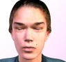
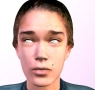
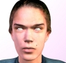
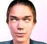
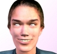
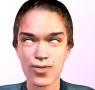
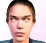
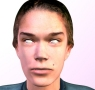
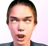
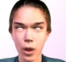

Character Facial Animation Shapekey Set
All expressions are done with the lips in neutral position (slightly parted to avoid vertex welding) and the jaw in a neutral position (open 1/16 to ¼ of an inch).
Expression ranges are; trace, slight, marked, pronounced, extreme, and maximum. Unless otherwise stated, all versions should be the position you would consider "marked".
00. |
Reference frame - Vertex positions must match physique/mrm file. |
|
01. |
Upper lid lowerer - Upper lid in eyes-closed position. |
|
02. |
||
03. |
||
04. |
||
05. |
||
06. |
Inner brow raiser - Inner portion of eyebrows raised. |
|
07. |
Outer brow raiser - Outer and/or center portion of eyebrows raised. |
|
08. |
Brow lowerer - Entire brow lowered, and pulled. |
|
09. |
||
10. |
Lip Corner Puller - Smile with mouth closed. |
|
11. |
||
12. |
Open Mouth Smile |
|
13. |
||
14. |
|
|
15. |
Lip Raiser - raise upper lip. |
|
16. |
||
17. |
||
18. |
||
19. |
Nose wrinkler - Wrinkle your nose, but don't open your mouth. |
|
20. |
Mouth closed - Lips held together in relaxed position, compensating for neutral anti-vertex-weld gap. Jaw neutral. |
|
21. |
||
22. |
Lip Puckerer - Lips making the "oo" sound in "fool", jaw neutral. |
|
23. |
|
|
24. |
Lip Stretcher - Lips pulled laterally into a "flat" smile. Jaw neutral. |
|
25. |
Lip Bite - Upper teeth biting the lower lip, used to make the "f" and "v" sound. Jaw neutral. |
|
26. |
Lip Presser - Lips pushed together, making the bilabial stop "b", "m", and "p". Jaw neutral. |
|
27. |
||
28. |
||
29. |
||
30. |
||
31. |
Jaw Dropped - Lips neutral, jaw drop is marked but not extreme (1 inch to 1 ½ inches). |
|
32. |
Mouth stretch - Jaw position same as Jaw Dropped, but mouth is relaxed and open as wide as jaw. |
|
33. |
Jaw Dropped - Extreme. |
|
34. |
||
|
|
||


© 2004 Valve Corporation. All rights reserved. Valve, the Valve logo, Half-Life, the Half-Life logo, the Lambda logo, Steam, the Steam logo, Team Fortress, the Team Fortress logo, Opposing Force, Day of Defeat, the Day of Defeat logo, Counter-Strike, the Counter-Strike logo, Source, the Source logo, Hammer and Counter-Strike: Condition Zero are trademarks and/or registered trademarks of Valve Corporation. Microsoft and Visual Studio are trademarks and/or registered trademarks of Microsoft Corporation. All other trademarks are property of their respective owners.